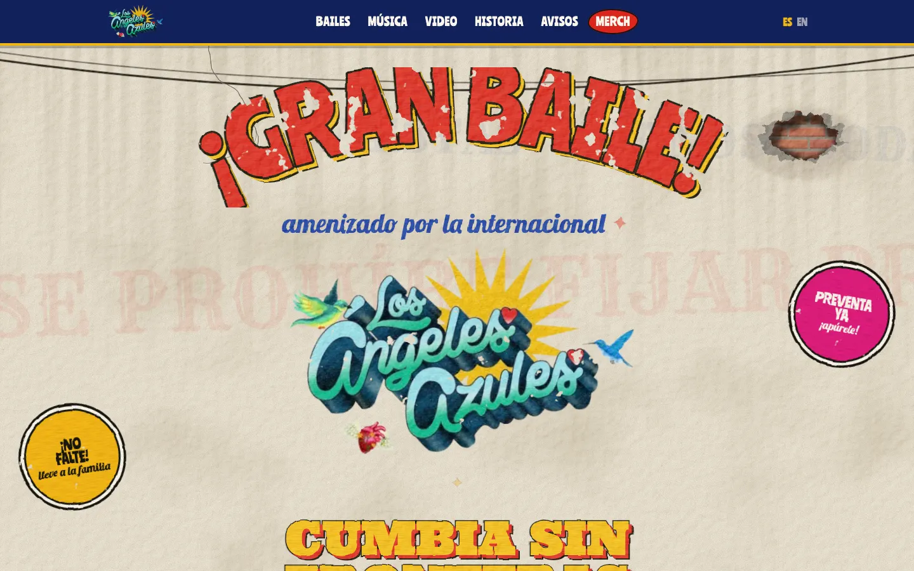
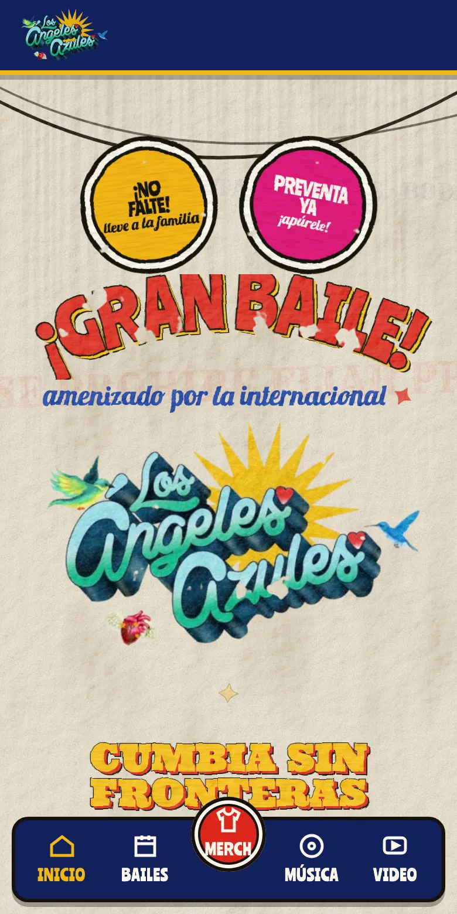
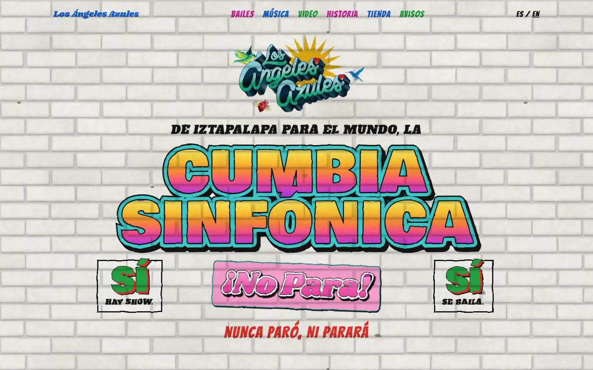
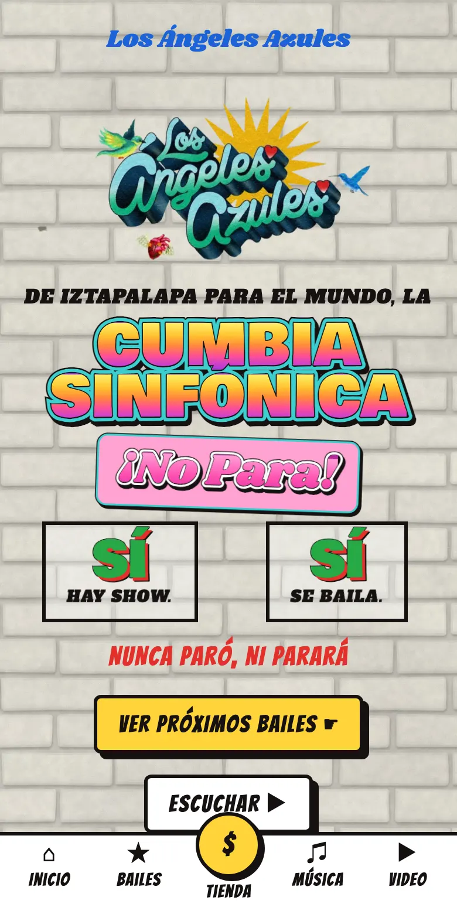
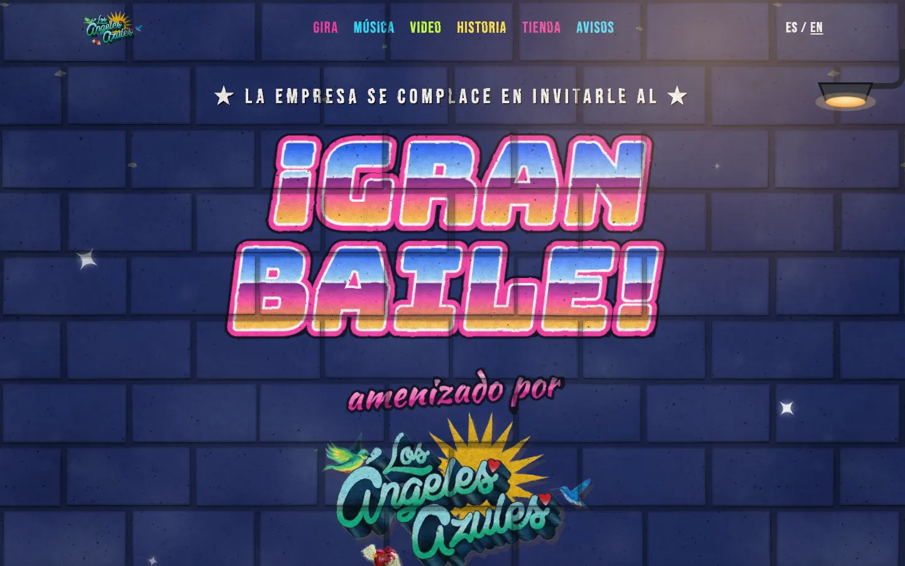
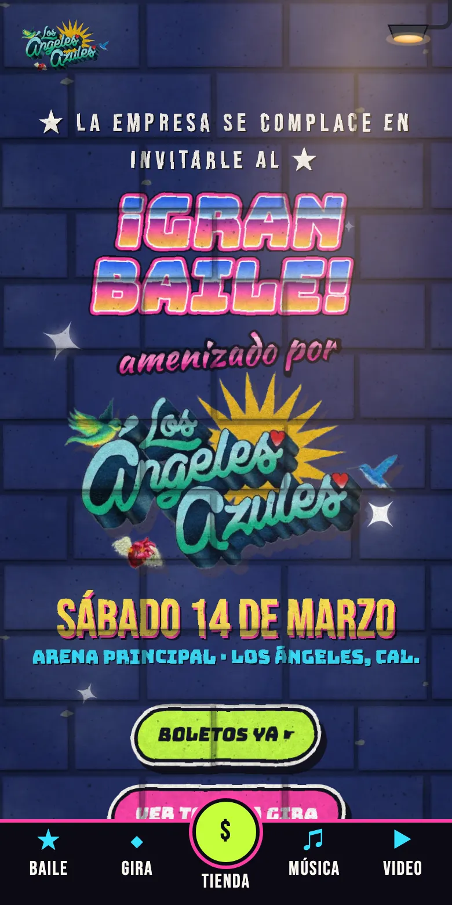

Propuestas de rediseño
Bardas de colores gastadas por los años: la tienda de discos, la fonda y el abarrotes del barrio.


Ladrillo encalado y lettering popular: letras en degradado, contorno turquesa y sombra negra.


Block pintado bajo la luz del poste y letra cromada sonidera. El inicio anuncia el próximo baile.

